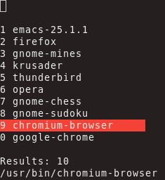

xstarter - Application launcher for Linux
xstarter is an application launcher for Linux. It lives in terminal and works well with tiling window managers (e.g. xmonad, i3 etc).

Downloads
Get get DEB and RPM packages here
It is available on AUR
It can be easily compiled from source code
Features
a clean, simple interface that works on various terminals
able to search for applications using environment variables (e.g. $PATH) and user-provided list of directories
can be configured to launch via a key-binding
can optionally open an application in terminal (see key shortcuts)
allows to provide arguments to applications (see key shortcuts)
remembers previously launched applications allowing to find them more quickly
allows fuzzy search (parts of the query can be separated with a space)
applications can be launched with 1, 2, …, 0 keys, depending on their position in the search results
fast, uses cache by default
easy to configure via a single text file
Running xstarter
xstarter needs to be launched from a terminal ($ xstarter). It is useful to run it using a key binding, preferably by binding your preferred key to a command starting xstarter from a terminal of your choice, e.g. xterm -e xstarter. Alternatively, you can simply bind it to xstarter in which case xstarter will open itself in a terminal.
You can also create an alias in your shell (e.g. bash, zsh): alias xs=xstarter.
It should run on any modern terminal. It is tested on: xterm, rxvt, gnome-terminal, xfce4-terminal, konsole. In case of any problems please report it.
Configuration
Configuration file is available and includes comments that explain configuration variables. It is located in the ~/.xstarter.d/ directory.
Providing arguments to applications
You can provide arguments to applications you wish to open.
If the number of search results is equal to 1, you can provide arguments the selected application should be started with, e.g. surf gnu.org
You can provide multiple arguments, e.g. emacs -nw -Q
You can select the application you want to provide arguments for by pressing Tab key
This feature works both with GUI (press Enter to start) and terminal applications (press C-o to start)
Key shortcuts
Use numbers 1..9 and 0 to open an application from the list.
By default, the following shortcuts are available:
Return (enter)Open selected applicationC-oOpen selected application in terminal (defined by “terminal” variable in the config file, xterm by default)C-nMove down the listC-pMove up the listC-gQuitC-dDelete entered characterC-wDelete entire queryTabAuto-complete using current selection; allow to provide arguments
News
2020-05-25
New version of xstarter (v0.8.1) was released today.
It’s a tiny release but it contains necessary fixes for xstarter to compile with gcc 10.
2018-08-28
There’s Emacs interface available for xstarter!

It uses Helm interface that many Emacs users are familiar with.
It loads a list of installed applications and lets a user select one to launch. It also records recently open programs and shows them on top.
See github page for installation instructions!
2018-08-27
New version of xstarter (v0.8.0) was released today.
Main intention of this release was to enable xstarter to work with external programs. I want to be able to use xstarter via Emacs and I’m working on a small package that will handle that. With this release xstarter is able to print a list of programs that it stored in cache (it can be tested by running xstarter -P). External applications can use it load the list of available programs and show it to users. In order to start a program, e.g. Firefox, use command xstarter -e firefox. It can be used on its own to start and detach applications from terminal as well by other software.
In this release I’ve also fixed an interesting bug that broke xstarter if it was built without compiler optimisation. I wrote about that bug on my blog.
2018-03-26
New version of xstarter is available (v0.7.0). It adds one useful feature: you can now provide arguments to the application. It works for GUI and terminal programs alike. This allows to start a program like this: surf gnu.org (GUI) or e.g. emacs -nw -Q.
How to use it?
If the number of search results is equal to 1, you can provide arguments the selected application should be started with, e.g. surf gnu.org. You can provide multiple arguments, e.g. emacs -nw -Q. You can select the application you want to provide arguments for by pressing Tab key
This feature works both with GUI (press Enter to start) and terminal applications (press C-o to start)
Screenshots


Emacs interface
Emacs package helm-xstarter offers an intuitive interface to launch applications via Emacs.
It loads a list of installed applications and lets a user select one to launch.
It also records recently open programs and shows them on top.